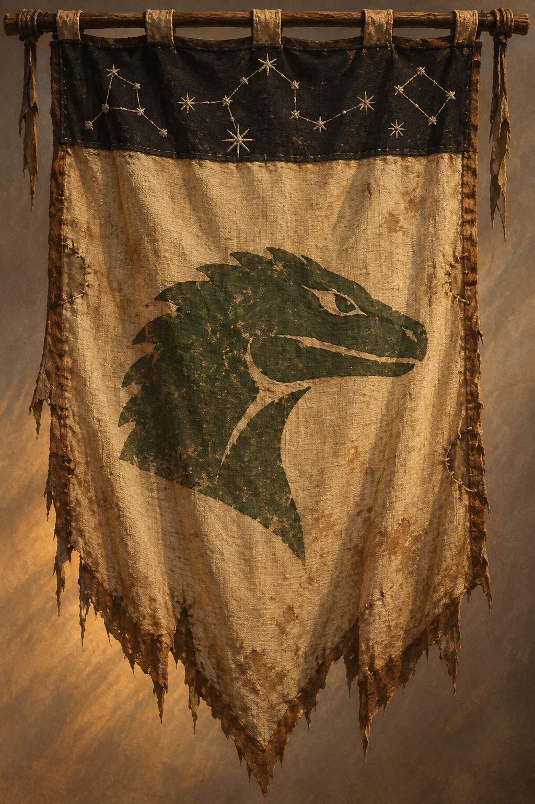

Aella

Visão Geral
Fundação: Formada após um conselho das tribos Doreán rejeitar a unificação, pouco antes dos acontecimentos da Sessão 2 - A Guerra do Simeno
Líder(es): Gundrada e lideranças aliadas ainda não identificadas
Sede: Kariate Aljusur
Membros: Colorados e outras tribos Doreán que aderiram à guerra contra Ffin
Recursos: Combatentes, lagartos de carga e conhecimento das rotas do deserto
Objetivos e Ideologia
Aella significa "Os Lutadores da Liberdade". A coalizão declarou guerra a Ffin e ataca carregamentos e minas de Simeno ligados a Athroniaeth. Seus integrantes reivindicam o minério como pertencente aos Doreán. Após a emboscada nas Pegadas do Gigante, Theron pediu ajuda para levá-lo "de volta para casa", para a tribo.
Aella distingue os mercadores ricos estrangeiros, considerados inimigos e agentes da exploração, dos trabalhadores das minas de Simeno, entre os quais há muitos Doreán. Essa distinção não impede a captura de mineradores como reféns.
Entre os combatentes encontrados pelo grupo, a hostilidade à academia também aparece na reação à magia visível, associada aos magos e à exploração do Simeno.
Estrutura e Hierarquia
- Aella é uma coalizão, não uma tribo e nem uma união de todo o povo Doreán.
- Os Colorados, liderados por Gundrada, são a maior tribo da coalizão.
- Gundrada convocou o conselho que discutiu a união das tribos. Após a maioria votar contra, a minoria dissidente se autoproclamou Aella e declarou guerra a Ffin.
- Theron comanda um destacamento de combatentes e liderou o ataque à caravana nas Pegadas do Gigante.
Relações com Outras Facções
| Facção | Relação | Notas |
|---|---|---|
| Colorados | Integrante | Maior tribo da coalizão, liderada por Gundrada. |
| Doreán | Dividida | Aella reúne apenas parte das tribos. A maioria rejeitou a unificação no conselho. |
| Athroniaeth | Hostil | Alvo dos ataques a carregamentos e minas de Simeno. |
A guerra foi declarada contra Ffin, cuja produção de água depende do Simeno. A perda do carregamento atacado pelo destacamento de Theron deve provocar racionamento, embora não baste para deixar a cidade sem água.
Ava teme que a retaliação atinja também os Doreán que não aderiram à guerra. Ela pretende reunir um segundo conselho com as lideranças que ficaram fora de Aella.
Membros Notáveis
- Gundrada: Líder dos Colorados e uma das lideranças de Aella. Convocou o conselho das tribos. Segundo Ava, a tomada de mineradores como reféns só aconteceria com seu aval.
- Theron: Comandante do destacamento que atacou uma caravana de Simeno nas Pegadas do Gigante. Sobreviveu à emboscada e levou o minério para sua tribo.
História
O conselho das tribos Doreán se reuniu por convocação de Gundrada, algo que não acontecia havia décadas. A proposta de união foi rejeitada pela maioria. As tribos dissidentes formaram Aella e declararam guerra a Ffin.
Na Sessão 2 - A Guerra do Simeno, o grupo acompanhou um destacamento de cerca de quarenta e dois combatentes sob o comando de Theron. A maioria era goliath e usava a pintura vermelha dos Colorados, reservada para campanhas de batalha e ritos sagrados.
O destacamento atacou uma caravana de Simeno nas Pegadas do Gigante. Mercadores fugiram e foram abatidos pelas costas. Ao abrir as caixas, os combatentes encontraram armaduras animadas e espadas voadoras com o brasão de Athroniaeth. O grupo interveio contra os construtos, mas apenas sete integrantes do destacamento sobreviveram, entre eles Theron. Os sobreviventes ficaram com o Simeno para levá-lo à tribo.
De volta a Ffin, o grupo soube por Ava de outro ataque de Aella, desta vez contra uma mina de Simeno, onde os mineradores foram feitos reféns. Maion informou que um mercador já havia levado à cidade a notícia do ataque à caravana e que um grupo de magos saíra à procura dos responsáveis.
Locais e Bases
- Pegadas do Gigante: Local da emboscada à caravana de Simeno. Não foi identificado como base da coalizão.